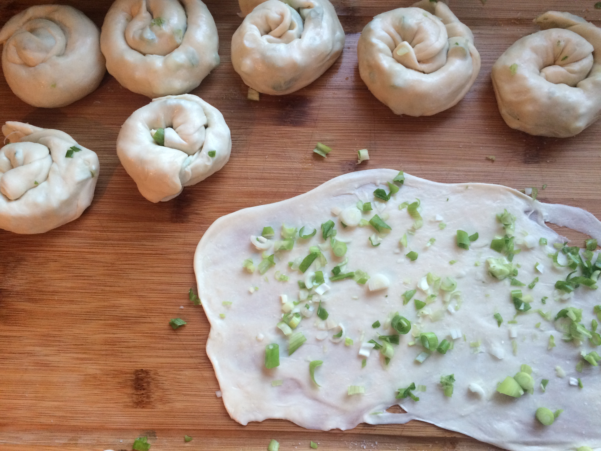

Beef
2 lbs beef round, cut in half lengthwise
1 star anise
1 tsp coriander seeds
2 tsp cumin
1 tsp cayenne
2 tbsp sugar
3 tbsp tomato paste
1/2 cup soy sauce
1/2 tsp chinese five spice powder
1 white onion, peeled, quartered
5 garlic cloves, sliced
1 inch ginger, sliced
2 bunches green onions, sliced
3 radishes, roughly peeled and cut
2 carrots, peeled, roughly cut
2 tbsp caramel sauce
1 tbsp fennel seeds
1 tsp black pepper
Scallion Pancake
4 cups all purpose flour
2 tsp salt
1 bunch green onions, finely chopped
Some extra oil and salt
Filling
1 large cucumber, peeled, cut into small french fry shaped pieces
1 bunch cilantro, stems removed
Sauce
1 tbsp rice vinegar
1 tbsp water
2 tbsp honey
3 tbsp hoisin sauce
3 tbsp oyster sauce
Serves Three Total Time: 150 minutes
In a large stock pot, briefly brown the beef over medium-high heat with some oil. Then add in the rest of the beef ingredients along with 4 cups of water. Bring to a boil, then cover and simmer for one hour. Remove the lid and salt the broth to taste. Then cover and simmer for another hour.
Meanwhile, in a large mixing bowl, add the flour along with one and a half cups hot water. Mix thoroughly, then add in 1/2 cup room temperature water and 2 tsp salt. Knead the dough for about 10 minutes over a lightly floured surface, but don't over flour, the dough should be slightly sticky at the end. Then coat the dough in oil, place in a bowl, and cover with plastic wrap for 30 minutes.
After 30 minutes, cut the dough into 6-8 pieces, and roll out each one over a lightly oiled surface until it is three hand widths in diameter. Sprinkle some salt over the pancake and then spread out a small handful of the green onions. Roll up each pancake into a tight roll, and then roll the other way into a snail shape.
Then roll out each snail roll until it is two hand widths in diameter. In a medium saucepan over medium heat, add a tbsp of olive or canola oil, and cook each pancake for about two minutes on each side.
After two hours in the pot, take out the beef and remove any herbs that may be stuck to it. Cut the beef into small strips. Then mix together the sauce ingredients. To prepare each roll, add a decent layer of sauce to a pancake, add a handful of the beef, a few strips of cucumber and some cilantro. Then roll up the pancake and cut in half. Serve warm or cold.
